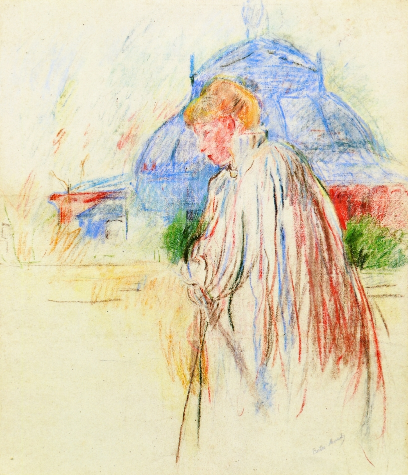

Tags: streets-and-squares, houses-and-buildings, palaces-and-mausoleums
Style: Impressionism
Artist: Morisot Berthe
Title: At the Exposition Palace
Year: unknown-year
Genre: genre painting
Categories: swab (93.2%); book_jacket (1.8%); komondor (1.1%); fountain (0.4%); volcano (0.4%)